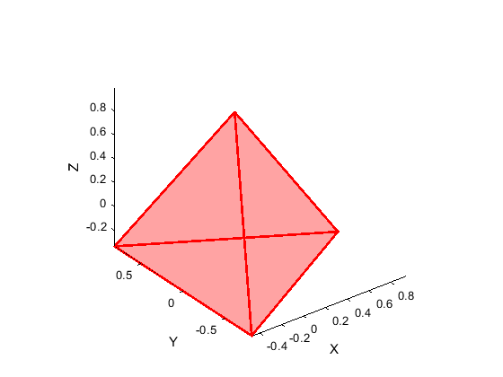

platonic_solids
function to compute and display the five platonic solids.
Author and support : nicolas.douillet (at) free.fr, 2020.
Contents
About / info
Platonic solids verify Euler formula, V - E + F = 2 with here :
- V the number of vertices
- E the number of edges
- F the number of faces.
Syntax
platonic_solids(id);
platonic_solids(id, Rho);
platonic_solids(id, Rho, option_display);
platonic_solids(id, Rho, option_display, face_type);
[V, F] = platonic_solids(id, Rho, option_display, face_type);
Description
platonic_solids(id) computes the vertex coordinates of the solid #id, its corresponding face set, and displays it.
platonic_solids(id, Rho) allows to change the radius Rho. Default value is Rho = 1;
platonic_solids(id, Rho, option_display) allows to *enable / disable the display.
platonic_solids(id, Rho, option_display, face_type) uses either default face type (id+2) edges polygon when set to 'default' or triangular face type when set to 'triangle'. Since tetrahedron, octahedron, and icosahedron default face type are already triangles, this option influences only square (id=2) and dodecahedron (id=5).
[V, F] = platonic_solids(id, Rho, option_display, face_type) also returns vertex and face sets.
See also
n_level_geoid | Tetrahedron_circumscribed_sphere | meshed_reuleaux_tetrahedron | Sierpinski_tetrahedron
Input arguments
- id : positive integer scalar double in the set {1;2;3;4;5}.
id = 1 -> tetrahedron (fire)
id = 2 -> cube (earth)
id = 3 -> octahedron (air)
id = 4 -> icosahedron (water)
id = 5 -> dodecahedron (ether)
- Rho : real positive scalar double, the radius of the sphere circumscribed to the solid.
- option_display : logical *true/false, to *enable/disable the display.
- face_type : character string in the set {'default','triangle'}. Case insensitive.
Output arguments
[ | | |]
- V = [Vx Vy Vz], real matrix double, the vertex set. Size(V) = [vertex_nb,3].
[ | | |] [ | | |]
- F = [i1 i2 i3], positive integer matrix double, the face set. Size(T) = [face_nb,3].
[ | | |]Example #1
tetrahedron
platonic_solids(1);
Example #2
triangulated cube
platonic_solids(2,1,true,'triangle');
Example #3
octahedron living in the sphere centred in [0 0 0] and of radius Rho = 9.
platonic_solids(3,9);
Example #4
icosahedron
[V,T] = platonic_solids(4);
Example #5
dodecahedron with a centre post translation from [0 0 0] to [1 2 3]
[V,T] = platonic_solids(5); V = V + repmat([1 2 3],[size(V,1),1]);